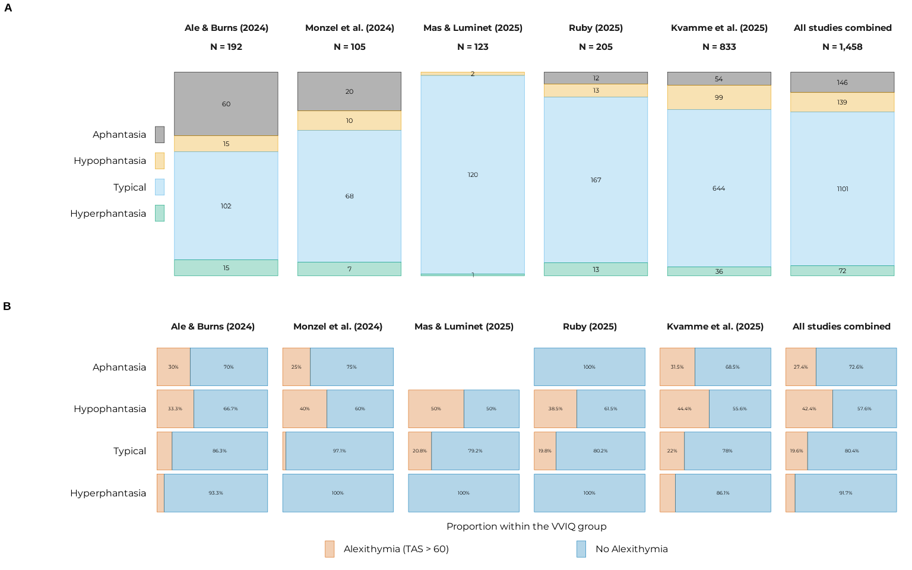
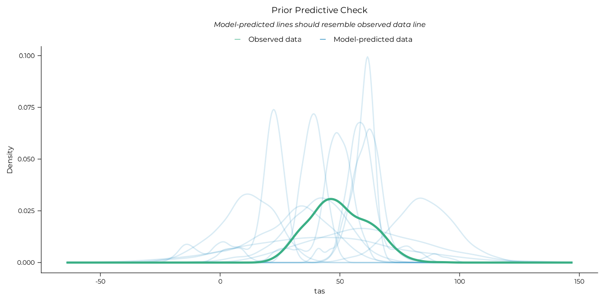
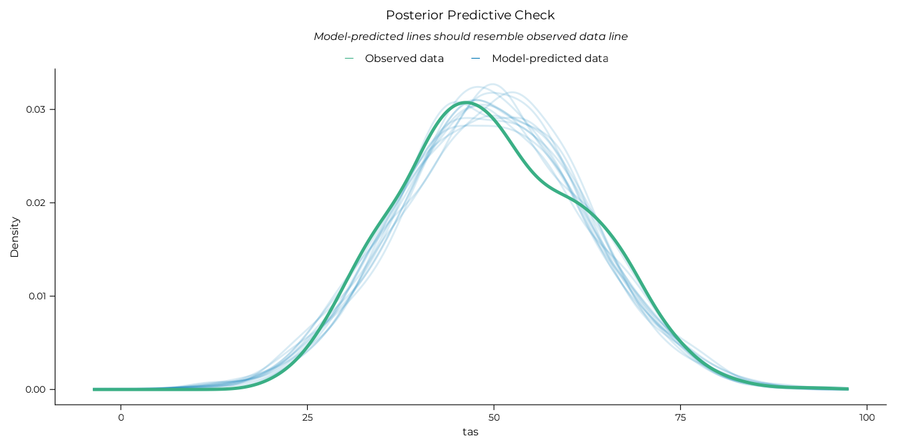
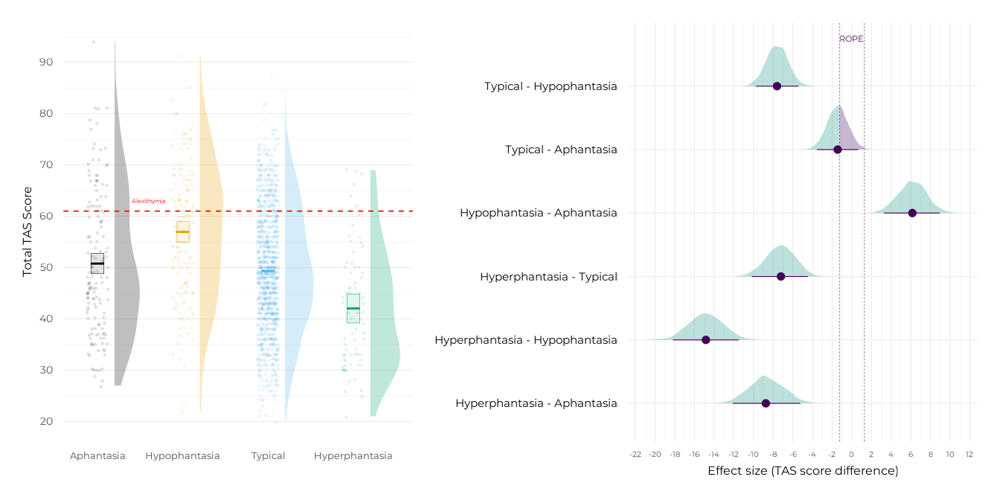
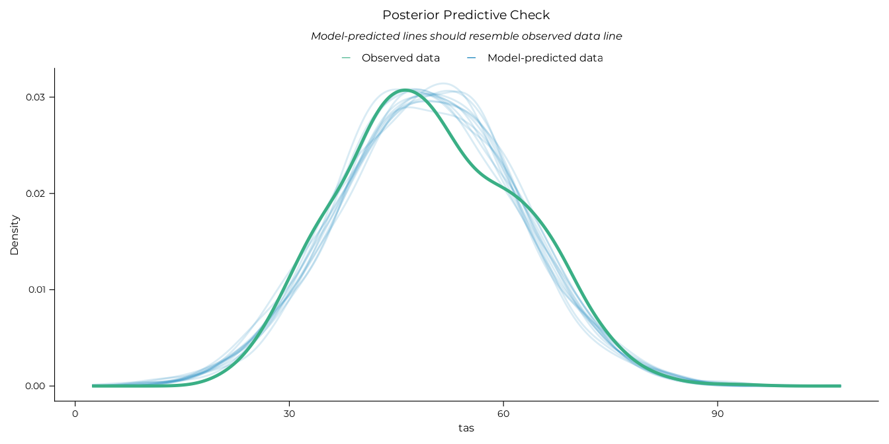
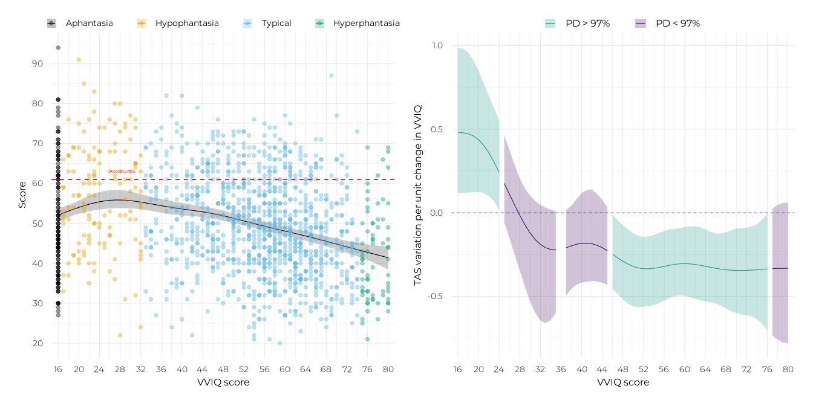
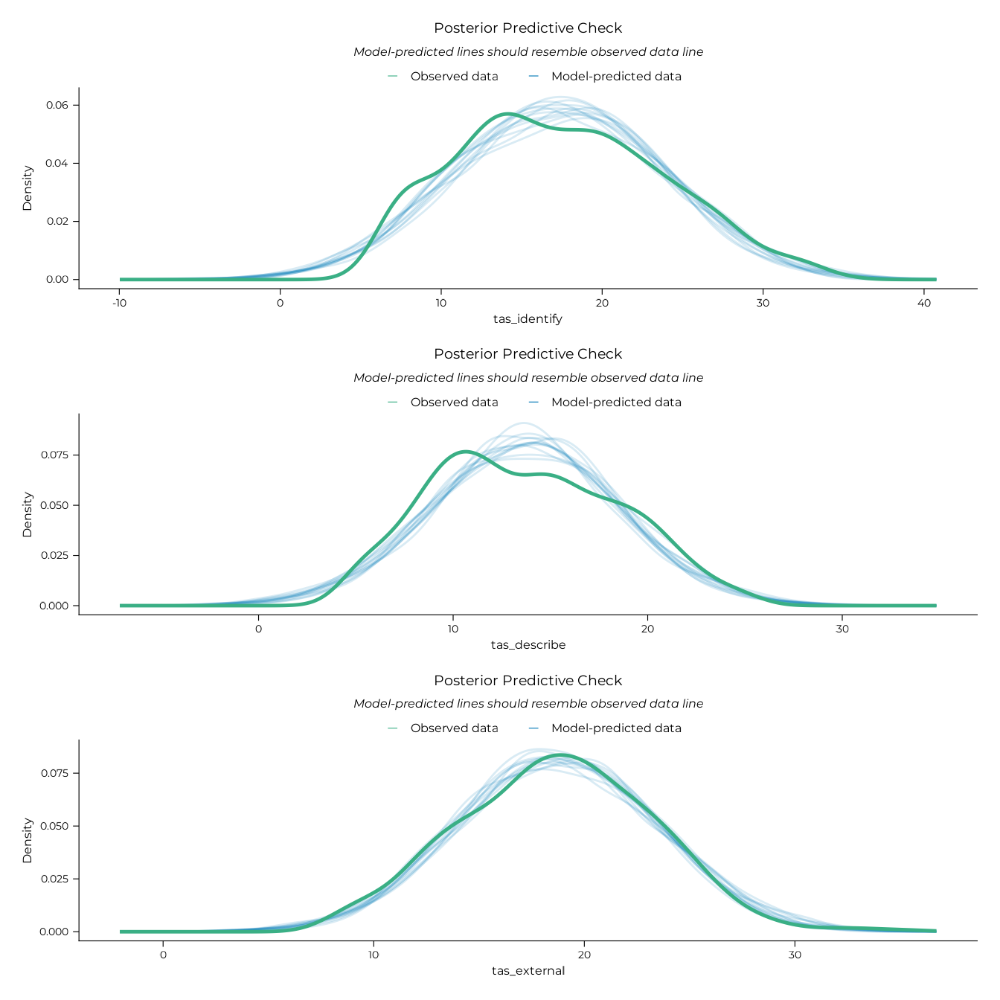
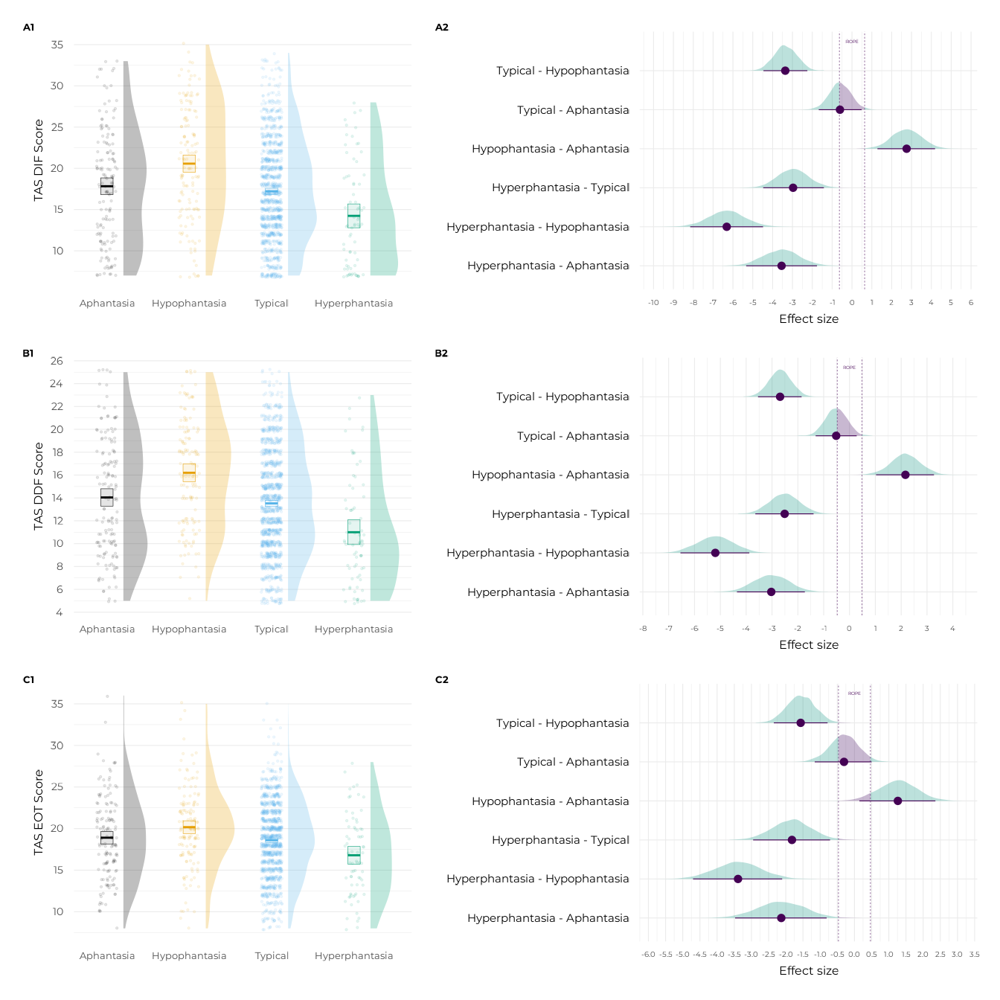
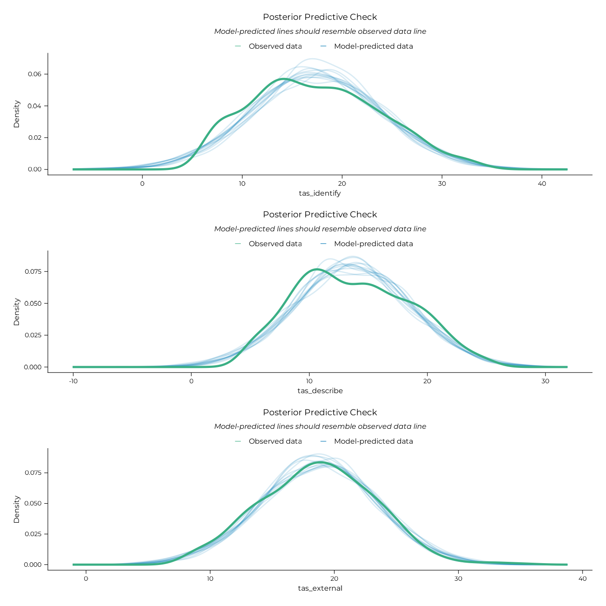
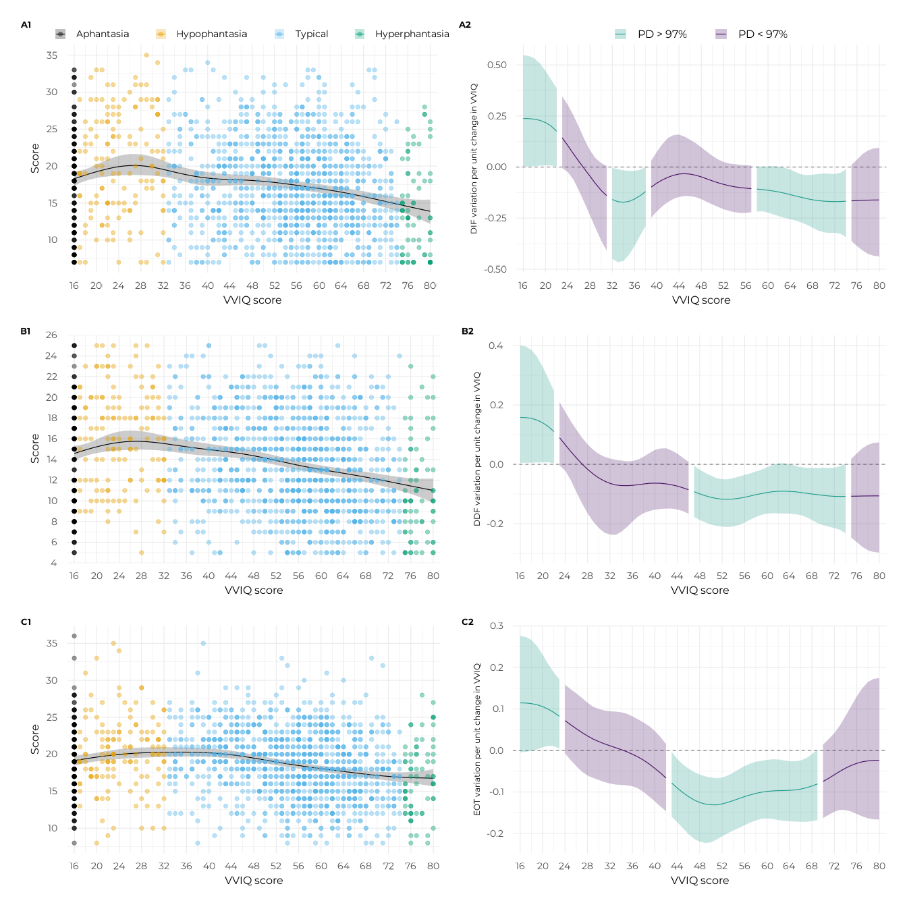

library(aphantasiaEmotions)
#> Welcome to aphantasiaEmotions.
library(patchwork)Sample description
all_data |>
dplyr::group_by(study) |>
dplyr::reframe(
Language = unique(lang),
N = paste0(
dplyr::n(),
" (",
sum(gender == "female", na.rm = TRUE),
" F, ",
sum(gender == "other", na.rm = TRUE),
" O)"
),
M_age = mean(age, na.rm = TRUE),
SD_age = sd(age, na.rm = TRUE),
min_age = min(age, na.rm = TRUE),
max_age = max(age, na.rm = TRUE),
) |>
knitr::kable(digits = 2)| study | Language | N | M_age | SD_age | min_age | max_age |
|---|---|---|---|---|---|---|
| burns | en | 192 (122 F, 3 O) | 38.69 | 11.44 | 18 | 86 |
| monzel | en | 105 (74 F, 0 O) | 27.87 | 9.29 | 18 | 59 |
| mas | fr | 123 (110 F, 0 O) | 19.78 | 1.15 | 18 | 24 |
| ruby | fr | 205 (162 F, 4 O) | 35.39 | 15.47 | 10 | 80 |
| kvamme | en | 833 (426 F, 5 O) | 40.45 | 13.44 | 18 | 83 |
p_counts <-
all_data |>
dplyr::bind_rows(all_data |> dplyr::mutate(study = "total")) |>
dplyr::mutate(
study = factor(
study,
levels = c("burns", "monzel", "mas", "ruby", "kvamme", "total")
)
) |>
plot_vviq_group_proportions(vviq_group_4, base_size = 12, prop_txt_size = 3)
p_props <-
all_data |>
summarise_aph_and_alexi(vviq_group_4) |>
plot_alexithymia_proportions(
vviq_group_4,
ncol = 6,
base_size = 12,
prop_txt_size = 2
)
ggpubr::ggarrange(
p_counts,
p_props,
ncol = 1,
heights = c(1.1, 1),
labels = "AUTO",
font.label = list(size = 14, face = "bold")
)
Modelling
Bayesian setup
Bayesian models were fitted using the brms::brm()
function from the brms package (Bürkner,
2017) through a custom wrapper, fit_brms_model(),
that sets several default options for us. 24000 post-warmup iterations
were spread across all available CPU for parallel processing1, with 2000
additional warmup iterations per chain. A fixed seed was used for
reproducibility. Regularising priors were used to improve convergence
and avoid overfitting. A weakly informative normal prior with mean 0 and
standard deviation 20 was used on the fixed effects to improve the
default flat priors of brms. Default weakly informative priors
from brms were used for other model parameters. The adequacy of
these priors were assessed using a prior predictive check, which is
presented below. To avoid having to refit the models each time the
vignette is built and improve reproducibility, fitted models are saved
in the models/ folder (or inst/models/ in the
source code on GitHub) and loaded in the R chunks.
After model fit, we checked model performance using posterior
predictive checks with the performance::check_predictions()
function to ensure that the models were able to reproduce the data
well.
We tested our hypotheses on linear models with marginal contrasts
between VVIQ groups. This task was performed with functions from the
marginaleffects package. We used the
marginaleffects::avg_comparisons() function to compute
contrasts and a custom report_rope() wrapper (around
marginaleffects::posterior_draws(),
bayestestR::rope_range() and
bayestestR::p_direction()) to summarise their posterior
distributions. We computed the probability of direction (PD) of the
contrasts and the proportions of their posterior distributions below,
inside or above a region of practical equivalence to the null (ROPE)
(see Makowski et al., 2019).
The dynamics of non-linear models was analysed using the
modelbased::estimate_slopes() function to compute the
variation of the outcome variable per unit change in VVIQ across its
range. We summarised the evidence for positive or negative slopes using
a custom check_slope_evidence() function that computes the
PD and ROPE proportions of the slope estimates.
The setup of marginaleffects options and model priors is done in the chunk below.
options("marginaleffects_safe" = FALSE)
draws <- seq(1, 4000, 1) # To limit draws that will be used for marginaleffects
priors <- c(brms::prior(normal(0, 20), class = "b"))
refit <- "never"Prior predictive check were performed to ensure that the priors set on the models were adequate. This was done by fitting a model with the same structure as the planned analyses but sampling only from the prior distributions. The posterior predictive distributions of this prior-only model were then plotted to check that they covered a reasonable range of values.
lm_prior <-
fit_brms_model(
formula = tas ~ vviq_group_4,
data = all_data,
prior = priors,
sample_prior = "only",
file_refit = refit,
file = system.file("models/lm_prior.rds", package = "aphantasiaEmotions")
)
performance::check_predictions(lm_prior, draw_ids = 1:12) |>
plot() +
ggplot2::labs(title = "Prior Predictive Check") +
theme_pdf(base_size = 12)
Here we go!
Analysis of total TAS-20 scores
Linear categorical model
# Group model
lm_tot <-
fit_brms_model(
formula = tas ~ vviq_group_4,
data = all_data,
prior = priors,
file_refit = refit,
file = system.file("models/lm_tot.rds", package = "aphantasiaEmotions")
)
# Posterior predictive check
performance::check_predictions(lm_tot, draw_ids = 1:12) |>
plot() +
theme_pdf(base_size = 12)
#> Ignoring unknown labels:
#> • size : ""
contrasts_tot <-
marginaleffects::comparisons(
lm_tot,
variables = list("vviq_group_4" = "pairwise"),
draw_ids = draws
)
report_rope(contrasts_tot, contrast) |> knitr::kable()| contrast | Estimate | 95% CI | d | PD | Below ROPE | Inside ROPE | Above ROPE |
|---|---|---|---|---|---|---|---|
| hyperphantasia - aphantasia | -8.751 | [-12.1, -5.227] | 0.70 | 1.000 | 1.000 | 0.00 | 0.000 |
| hyperphantasia - hypophantasia | -14.839 | [-18.183, -11.479] | 1.19 | 1.000 | 1.000 | 0.00 | 0.000 |
| hyperphantasia - typical | -7.212 | [-10.184, -4.466] | 0.58 | 1.000 | 1.000 | 0.00 | 0.000 |
| hypophantasia - aphantasia | 6.156 | [3.257, 8.951] | 0.49 | 1.000 | 0.000 | 0.00 | 1.000 |
| typical - aphantasia | -1.446 | [-3.552, 0.654] | 0.12 | 0.913 | 0.574 | 0.42 | 0.006 |
| typical - hypophantasia | -7.605 | [-9.772, -5.404] | 0.61 | 1.000 | 1.000 | 0.00 | 0.000 |
p_contr_tot <-
plot_posterior_contrasts(
contrasts_tot,
lm_tot,
base_size = 12,
rope_txt = 3,
dot_size = 1,
x_lab = "Effect size (TAS score difference)",
axis_relative_x = 0.7
)
# Group plot
p_tot <-
plot_group_violins(
tas ~ vviq_group_4,
y_lab = "Total TAS Score",
base_size = 12
) +
plot_alexithymia_cutoff(txt_size = 2, txt_x = 1.4, label = "Alexithymia") +
scale_discrete_aphantasia() +
scale_x_aphantasia(add = c(0.4, 0.7))
plot(p_tot + p_contr_tot)
Nonlinear continuous model
gam_tot <-
fit_brms_model(
formula = tas ~ s(vviq),
data = all_data,
prior = priors,
file_refit = refit,
file = system.file("models/gam_tot.rds", package = "aphantasiaEmotions")
)
# Posterior predictive check
performance::check_predictions(gam_tot, draw_ids = 1:12) |>
plot() +
theme_pdf(base_size = 12)
#> Ignoring unknown labels:
#> • size : ""
slopes_tot <-
modelbased::estimate_slopes(
gam_tot,
trend = "vviq",
by = "vviq",
length = 75,
rope_ci = 1
)
check_slope_evidence(slopes_tot) |> knitr::kable()| VVIQ | Median | CI | PD | Inside ROPE | Evidence |
|---|---|---|---|---|---|
| 16 | 0.481 | [0.118, 0.988] | 0.997 | 0.018 | Non null |
| 17 | 0.479 | [0.119, 0.982] | 0.997 | 0.018 | Non null |
| 18 | 0.473 | [0.121, 0.959] | 0.997 | 0.017 | Non null |
| 19 | 0.460 | [0.124, 0.915] | 0.998 | 0.017 | Non null |
| 20 | 0.438 | [0.123, 0.852] | 0.998 | 0.016 | Non null |
| 21 | 0.405 | [0.119, 0.777] | 0.998 | 0.018 | Non null |
| 22 | 0.360 | [0.1, 0.699] | 0.998 | 0.025 | Non null |
| 23 | 0.303 | [0.07, 0.627] | 0.995 | 0.048 | Non null |
| 24 | 0.241 | [0.017, 0.553] | 0.983 | 0.112 | Non null |
| 25 | 0.176 | [-0.057, 0.466] | 0.933 | 0.246 | Uncertain |
| 26 | 0.111 | [-0.151, 0.375] | 0.823 | 0.413 | Uncertain |
| 27 | 0.047 | [-0.251, 0.286] | 0.652 | 0.544 | Uncertain |
| 28 | -0.015 | [-0.345, 0.206] | 0.549 | 0.583 | Uncertain |
| 29 | -0.072 | [-0.441, 0.146] | 0.720 | 0.517 | Uncertain |
| 30 | -0.121 | [-0.531, 0.102] | 0.835 | 0.416 | Uncertain |
| 31 | -0.161 | [-0.6, 0.071] | 0.898 | 0.325 | Uncertain |
| 32 | -0.189 | [-0.645, 0.047] | 0.932 | 0.260 | Uncertain |
| 33 | -0.209 | [-0.66, 0.031] | 0.951 | 0.216 | Uncertain |
| 34 | -0.219 | [-0.642, 0.019] | 0.963 | 0.187 | Uncertain |
| 35 | -0.222 | [-0.6, 0.01] | 0.969 | 0.168 | Uncertain |
| 36 | -0.218 | [-0.546, 0.008] | 0.970 | 0.163 | Non null |
| 37 | -0.209 | [-0.494, 0.016] | 0.966 | 0.167 | Uncertain |
| 38 | -0.198 | [-0.454, 0.042] | 0.951 | 0.183 | Uncertain |
| 39 | -0.188 | [-0.431, 0.082] | 0.931 | 0.202 | Uncertain |
| 40 | -0.183 | [-0.418, 0.118] | 0.912 | 0.219 | Uncertain |
| 41 | -0.182 | [-0.412, 0.136] | 0.902 | 0.220 | Uncertain |
| 42 | -0.185 | [-0.408, 0.139] | 0.904 | 0.211 | Uncertain |
| 43 | -0.195 | [-0.411, 0.111] | 0.919 | 0.192 | Uncertain |
| 44 | -0.209 | [-0.417, 0.078] | 0.942 | 0.162 | Uncertain |
| 45 | -0.227 | [-0.432, 0.032] | 0.962 | 0.126 | Uncertain |
| 46 | -0.248 | [-0.457, -0.011] | 0.978 | 0.087 | Non null |
| 47 | -0.270 | [-0.487, -0.045] | 0.988 | 0.059 | Non null |
| 48 | -0.290 | [-0.518, -0.075] | 0.993 | 0.037 | Non null |
| 49 | -0.307 | [-0.545, -0.099] | 0.997 | 0.025 | Non null |
| 50 | -0.321 | [-0.56, -0.123] | 0.998 | 0.015 | Non null |
| 51 | -0.330 | [-0.565, -0.138] | 0.999 | 0.011 | Non null |
| 52 | -0.335 | [-0.562, -0.144] | 0.999 | 0.009 | Non null |
| 53 | -0.335 | [-0.56, -0.141] | 0.999 | 0.010 | Non null |
| 54 | -0.333 | [-0.552, -0.133] | 0.999 | 0.012 | Non null |
| 55 | -0.327 | [-0.541, -0.121] | 0.998 | 0.016 | Non null |
| 56 | -0.321 | [-0.526, -0.109] | 0.997 | 0.021 | Non null |
| 57 | -0.314 | [-0.51, -0.099] | 0.997 | 0.025 | Non null |
| 58 | -0.308 | [-0.499, -0.096] | 0.996 | 0.027 | Non null |
| 59 | -0.306 | [-0.494, -0.092] | 0.996 | 0.028 | Non null |
| 60 | -0.304 | [-0.496, -0.085] | 0.995 | 0.032 | Non null |
| 61 | -0.306 | [-0.506, -0.082] | 0.994 | 0.033 | Non null |
| 62 | -0.309 | [-0.515, -0.081] | 0.994 | 0.034 | Non null |
| 63 | -0.314 | [-0.525, -0.087] | 0.994 | 0.030 | Non null |
| 64 | -0.320 | [-0.53, -0.099] | 0.996 | 0.025 | Non null |
| 65 | -0.326 | [-0.534, -0.114] | 0.997 | 0.019 | Non null |
| 66 | -0.332 | [-0.543, -0.124] | 0.998 | 0.015 | Non null |
| 67 | -0.338 | [-0.556, -0.124] | 0.998 | 0.015 | Non null |
| 68 | -0.341 | [-0.573, -0.116] | 0.997 | 0.019 | Non null |
| 69 | -0.344 | [-0.59, -0.104] | 0.995 | 0.023 | Non null |
| 70 | -0.345 | [-0.601, -0.095] | 0.995 | 0.026 | Non null |
| 71 | -0.345 | [-0.609, -0.091] | 0.995 | 0.028 | Non null |
| 72 | -0.345 | [-0.613, -0.088] | 0.995 | 0.029 | Non null |
| 73 | -0.343 | [-0.62, -0.083] | 0.994 | 0.032 | Non null |
| 74 | -0.341 | [-0.637, -0.068] | 0.992 | 0.040 | Non null |
| 75 | -0.339 | [-0.666, -0.041] | 0.986 | 0.055 | Non null |
| 76 | -0.336 | [-0.702, -0.007] | 0.977 | 0.072 | Non null |
| 77 | -0.334 | [-0.735, 0.025] | 0.966 | 0.084 | Uncertain |
| 78 | -0.333 | [-0.759, 0.048] | 0.959 | 0.094 | Uncertain |
| 79 | -0.333 | [-0.776, 0.059] | 0.955 | 0.098 | Uncertain |
| 80 | -0.333 | [-0.781, 0.061] | 0.953 | 0.100 | Uncertain |
p_slopes_tot <-
plot_gam_slopes(
slopes_tot,
.f_groups = dplyr::case_when(
vviq <= 24 ~ 1,
vviq <= 35 ~ 2,
vviq <= 36 ~ 3,
vviq <= 45 ~ 4,
vviq <= 76 ~ 5,
vviq <= 80 ~ 6
),
y_lab = "TAS variation per unit change in VVIQ",
base_size = 12
)
p_gam_tot <-
plot_gam_means(
gam_tot,
y_title = "Total TAS score",
legend_relative = 0.85,
base_size = 12
) +
plot_coloured_subjects(
x = all_data$vviq,
y = all_data$tas,
size = 1
) +
plot_alexithymia_cutoff(txt_x = 26, label = "Alexithymia") +
scale_discrete_aphantasia() +
scale_x_vviq()
plot(p_gam_tot + p_slopes_tot)
Analysis of TAS-20 sub-scale scores
Linear categorical models
# Subscale group models
lm_dif <-
fit_brms_model(
formula = tas_identify ~ vviq_group_4,
data = all_data,
prior = priors,
file_refit = refit,
file = system.file("models/lm_dif.rds", package = "aphantasiaEmotions")
)
lm_ddf <-
fit_brms_model(
formula = tas_describe ~ vviq_group_4,
data = all_data,
prior = priors,
file_refit = refit,
file = system.file("models/lm_ddf.rds", package = "aphantasiaEmotions")
)
lm_eot <-
fit_brms_model(
formula = tas_external ~ vviq_group_4,
data = all_data,
prior = priors,
file_refit = refit,
file = system.file("models/lm_eot.rds", package = "aphantasiaEmotions")
)
# Posterior predictive checks
pp_dif_lm <-
performance::check_predictions(lm_dif, draw_ids = 1:12) |>
plot() +
theme_pdf(base_size = 12)
pp_ddf_lm <-
performance::check_predictions(lm_ddf, draw_ids = 1:12) |>
plot() +
theme_pdf(base_size = 12)
pp_eot_lm <-
performance::check_predictions(lm_eot, draw_ids = 1:12) |>
plot() +
theme_pdf(base_size = 12)
plot(pp_dif_lm / pp_ddf_lm / pp_eot_lm)
#> Ignoring unknown labels:
#> • size : ""
#> Ignoring unknown labels:
#> • size : ""
#> Ignoring unknown labels:
#> • size : ""
contrasts_dif <-
marginaleffects::comparisons(
lm_dif,
variables = list("vviq_group_4" = "pairwise"),
draw_ids = draws
)
report_rope(contrasts_dif, contrast) |> knitr::kable()| contrast | Estimate | 95% CI | d | PD | Below ROPE | Inside ROPE | Above ROPE |
|---|---|---|---|---|---|---|---|
| hyperphantasia - aphantasia | -3.548 | [-5.329, -1.764] | 0.56 | 1.000 | 0.999 | 0.001 | 0.000 |
| hyperphantasia - hypophantasia | -6.312 | [-8.152, -4.484] | 0.99 | 1.000 | 1.000 | 0.000 | 0.000 |
| hyperphantasia - typical | -2.969 | [-4.473, -1.417] | 0.47 | 1.000 | 0.998 | 0.002 | 0.000 |
| hypophantasia - aphantasia | 2.753 | [1.283, 4.181] | 0.43 | 1.000 | 0.000 | 0.003 | 0.997 |
| typical - aphantasia | -0.607 | [-1.673, 0.486] | 0.10 | 0.866 | 0.476 | 0.511 | 0.014 |
| typical - hypophantasia | -3.362 | [-4.461, -2.25] | 0.53 | 1.000 | 1.000 | 0.000 | 0.000 |
contrasts_ddf <-
marginaleffects::comparisons(
lm_ddf,
variables = list("vviq_group_4" = "pairwise"),
draw_ids = draws
)
report_rope(contrasts_ddf, contrast) |> knitr::kable()| contrast | Estimate | 95% CI | d | PD | Below ROPE | Inside ROPE | Above ROPE |
|---|---|---|---|---|---|---|---|
| hyperphantasia - aphantasia | -3.026 | [-4.355, -1.729] | 0.63 | 1.000 | 1.000 | 0.000 | 0.000 |
| hyperphantasia - hypophantasia | -5.191 | [-6.544, -3.879] | 1.09 | 1.000 | 1.000 | 0.000 | 0.000 |
| hyperphantasia - typical | -2.509 | [-3.645, -1.393] | 0.53 | 1.000 | 1.000 | 0.000 | 0.000 |
| hypophantasia - aphantasia | 2.163 | [1.029, 3.268] | 0.45 | 1.000 | 0.000 | 0.002 | 0.999 |
| typical - aphantasia | -0.515 | [-1.309, 0.278] | 0.11 | 0.897 | 0.534 | 0.457 | 0.009 |
| typical - hypophantasia | -2.688 | [-3.541, -1.855] | 0.56 | 1.000 | 1.000 | 0.000 | 0.000 |
contrasts_eot <-
marginaleffects::comparisons(
lm_eot,
variables = list("vviq_group_4" = "pairwise"),
draw_ids = draws
)
report_rope(contrasts_eot, contrast) |> knitr::kable()| contrast | Estimate | 95% CI | d | PD | Below ROPE | Inside ROPE | Above ROPE |
|---|---|---|---|---|---|---|---|
| hyperphantasia - aphantasia | -2.131 | [-3.473, -0.819] | 0.46 | 0.999 | 0.993 | 0.007 | 0.000 |
| hyperphantasia - hypophantasia | -3.391 | [-4.698, -2.104] | 0.73 | 1.000 | 1.000 | 0.000 | 0.000 |
| hyperphantasia - typical | -1.820 | [-2.951, -0.711] | 0.39 | 0.999 | 0.991 | 0.009 | 0.000 |
| hypophantasia - aphantasia | 1.265 | [0.143, 2.356] | 0.27 | 0.988 | 0.001 | 0.082 | 0.916 |
| typical - aphantasia | -0.304 | [-1.156, 0.499] | 0.07 | 0.769 | 0.342 | 0.627 | 0.031 |
| typical - hypophantasia | -1.567 | [-2.348, -0.783] | 0.34 | 1.000 | 0.997 | 0.004 | 0.000 |
# Subscale group plots
p_dif <-
plot_group_violins(
tas_identify ~ vviq_group_4,
y_lab = "TAS DIF Score",
base_size = 12
) +
scale_discrete_aphantasia() +
scale_x_aphantasia(add = c(0.4, 0.7))
p_ddf <-
plot_group_violins(
tas_describe ~ vviq_group_4,
y_lab = "TAS DDF Score",
base_size = 12
) +
scale_discrete_aphantasia() +
scale_x_aphantasia(add = c(0.4, 0.7))
p_eot <-
plot_group_violins(
tas_external ~ vviq_group_4,
y_lab = "TAS EOT Score",
base_size = 12
) +
scale_discrete_aphantasia() +
scale_x_aphantasia(add = c(0.4, 0.7))
# Subscale contrast plots
p_dif_contr <-
plot_posterior_contrasts(
contrasts_dif,
lm_dif,
xlab = "Effect size (DIF score difference)",
base_size = 12,
dot_size = 1,
axis_relative_x = 0.7
)
p_ddf_contr <-
plot_posterior_contrasts(
contrasts_ddf,
lm_ddf,
xlab = "Effect size (DDF score difference)",
base_size = 12,
dot_size = 1,
axis_relative_x = 0.7
)
p_eot_contr <-
plot_posterior_contrasts(
contrasts_eot,
lm_eot,
xlab = "Effect size (EOT score difference)",
base_size = 12,
dot_size = 1,
axis_relative_x = 0.7
)
((p_dif + p_dif_contr) + plot_layout(tag_level = "new")) /
((p_ddf + p_ddf_contr) + plot_layout(tag_level = "new")) /
((p_eot + p_eot_contr) + plot_layout(tag_level = "new")) +
plot_annotation(tag_levels = c("A", "1")) &
ggplot2::theme(plot.tag = ggplot2::element_text(size = 10, face = "bold"))
Nonlinear continuous models
# Subscale GAM models
gam_dif <-
fit_brms_model(
formula = tas_identify ~ s(vviq),
data = all_data,
prior = priors,
file_refit = refit,
file = system.file("models/gam_dif.rds", package = "aphantasiaEmotions")
)
gam_ddf <-
fit_brms_model(
formula = tas_describe ~ s(vviq),
data = all_data,
prior = priors,
file_refit = refit,
file = system.file("models/gam_ddf.rds", package = "aphantasiaEmotions")
)
gam_eot <-
fit_brms_model(
formula = tas_external ~ s(vviq),
data = all_data,
prior = priors,
file_refit = refit,
file = system.file("models/gam_eot.rds", package = "aphantasiaEmotions")
)
# Posterior predictive checks
pp_dif_gam <-
performance::check_predictions(gam_dif, draw_ids = 1:12) |>
plot() +
theme_pdf(base_size = 12)
pp_ddf_gam <-
performance::check_predictions(gam_ddf, draw_ids = 1:12) |>
plot() +
theme_pdf(base_size = 12)
pp_eot_gam <-
performance::check_predictions(gam_eot, draw_ids = 1:12) |>
plot() +
theme_pdf(base_size = 12)
plot(pp_dif_gam / pp_ddf_gam / pp_eot_gam)
#> Ignoring unknown labels:
#> • size : ""
#> Ignoring unknown labels:
#> • size : ""
#> Ignoring unknown labels:
#> • size : ""
slopes_dif <-
modelbased::estimate_slopes(gam_dif, trend = "vviq", by = "vviq", length = 75)
check_slope_evidence(slopes_dif) |> knitr::kable()| VVIQ | Median | CI | PD | Inside ROPE | Evidence |
|---|---|---|---|---|---|
| 16 | 0.238 | [0.003, 0.548] | 0.977 | 0.139 | Non null |
| 17 | 0.237 | [0.003, 0.544] | 0.977 | 0.138 | Non null |
| 18 | 0.234 | [0.005, 0.532] | 0.978 | 0.138 | Non null |
| 19 | 0.228 | [0.007, 0.507] | 0.980 | 0.140 | Non null |
| 20 | 0.218 | [0.008, 0.471] | 0.981 | 0.147 | Non null |
| 21 | 0.201 | [0.007, 0.428] | 0.981 | 0.166 | Non null |
| 22 | 0.175 | [0.003, 0.386] | 0.978 | 0.211 | Non null |
| 23 | 0.143 | [-0.005, 0.346] | 0.969 | 0.305 | Uncertain |
| 24 | 0.105 | [-0.025, 0.305] | 0.937 | 0.474 | Uncertain |
| 25 | 0.065 | [-0.061, 0.254] | 0.846 | 0.682 | Uncertain |
| 26 | 0.027 | [-0.115, 0.196] | 0.668 | 0.844 | Uncertain |
| 27 | -0.009 | [-0.175, 0.135] | 0.555 | 0.867 | Uncertain |
| 28 | -0.045 | [-0.237, 0.081] | 0.754 | 0.757 | Uncertain |
| 29 | -0.082 | [-0.3, 0.043] | 0.881 | 0.585 | Uncertain |
| 30 | -0.114 | [-0.359, 0.02] | 0.941 | 0.443 | Uncertain |
| 31 | -0.140 | [-0.41, 0.005] | 0.968 | 0.347 | Uncertain |
| 32 | -0.159 | [-0.449, -0.004] | 0.979 | 0.289 | Non null |
| 33 | -0.170 | [-0.466, -0.011] | 0.986 | 0.256 | Non null |
| 34 | -0.172 | [-0.46, -0.016] | 0.988 | 0.240 | Non null |
| 35 | -0.168 | [-0.43, -0.019] | 0.990 | 0.240 | Non null |
| 36 | -0.157 | [-0.387, -0.018] | 0.990 | 0.256 | Non null |
| 37 | -0.140 | [-0.336, -0.013] | 0.987 | 0.303 | Non null |
| 38 | -0.120 | [-0.289, 0.001] | 0.974 | 0.389 | Non null |
| 39 | -0.098 | [-0.248, 0.032] | 0.940 | 0.510 | Uncertain |
| 40 | -0.079 | [-0.217, 0.074] | 0.883 | 0.638 | Uncertain |
| 41 | -0.063 | [-0.192, 0.112] | 0.814 | 0.733 | Uncertain |
| 42 | -0.050 | [-0.171, 0.142] | 0.750 | 0.785 | Uncertain |
| 43 | -0.040 | [-0.156, 0.156] | 0.703 | 0.819 | Uncertain |
| 44 | -0.034 | [-0.147, 0.159] | 0.675 | 0.842 | Uncertain |
| 45 | -0.033 | [-0.142, 0.149] | 0.666 | 0.859 | Uncertain |
| 46 | -0.035 | [-0.142, 0.133] | 0.682 | 0.869 | Uncertain |
| 47 | -0.040 | [-0.148, 0.117] | 0.718 | 0.864 | Uncertain |
| 48 | -0.048 | [-0.157, 0.096] | 0.768 | 0.844 | Uncertain |
| 49 | -0.058 | [-0.171, 0.075] | 0.824 | 0.799 | Uncertain |
| 50 | -0.068 | [-0.183, 0.055] | 0.876 | 0.746 | Uncertain |
| 51 | -0.077 | [-0.195, 0.038] | 0.916 | 0.683 | Uncertain |
| 52 | -0.085 | [-0.207, 0.025] | 0.941 | 0.623 | Uncertain |
| 53 | -0.091 | [-0.215, 0.017] | 0.955 | 0.569 | Uncertain |
| 54 | -0.097 | [-0.221, 0.014] | 0.959 | 0.528 | Uncertain |
| 55 | -0.100 | [-0.225, 0.011] | 0.963 | 0.496 | Uncertain |
| 56 | -0.103 | [-0.225, 0.009] | 0.965 | 0.473 | Uncertain |
| 57 | -0.106 | [-0.221, 0.007] | 0.969 | 0.452 | Uncertain |
| 58 | -0.108 | [-0.218, 0.004] | 0.972 | 0.432 | Non null |
| 59 | -0.110 | [-0.217, 0.002] | 0.973 | 0.414 | Non null |
| 60 | -0.114 | [-0.223, 0.004] | 0.972 | 0.392 | Non null |
| 61 | -0.118 | [-0.232, 0.005] | 0.971 | 0.361 | Non null |
| 62 | -0.123 | [-0.241, 0.002] | 0.973 | 0.327 | Non null |
| 63 | -0.128 | [-0.249, -0.004] | 0.977 | 0.288 | Non null |
| 64 | -0.135 | [-0.256, -0.012] | 0.983 | 0.244 | Non null |
| 65 | -0.142 | [-0.263, -0.025] | 0.989 | 0.206 | Non null |
| 66 | -0.148 | [-0.271, -0.036] | 0.993 | 0.172 | Non null |
| 67 | -0.155 | [-0.283, -0.04] | 0.994 | 0.152 | Non null |
| 68 | -0.160 | [-0.297, -0.038] | 0.993 | 0.141 | Non null |
| 69 | -0.164 | [-0.311, -0.034] | 0.992 | 0.134 | Non null |
| 70 | -0.167 | [-0.319, -0.031] | 0.991 | 0.131 | Non null |
| 71 | -0.168 | [-0.323, -0.033] | 0.990 | 0.133 | Non null |
| 72 | -0.169 | [-0.322, -0.034] | 0.991 | 0.135 | Non null |
| 73 | -0.169 | [-0.327, -0.028] | 0.989 | 0.148 | Non null |
| 74 | -0.167 | [-0.343, -0.011] | 0.981 | 0.173 | Non null |
| 75 | -0.165 | [-0.363, 0.011] | 0.968 | 0.204 | Uncertain |
| 76 | -0.164 | [-0.386, 0.036] | 0.950 | 0.236 | Uncertain |
| 77 | -0.163 | [-0.409, 0.063] | 0.930 | 0.261 | Uncertain |
| 78 | -0.162 | [-0.425, 0.081] | 0.916 | 0.275 | Uncertain |
| 79 | -0.161 | [-0.434, 0.091] | 0.909 | 0.283 | Uncertain |
| 80 | -0.161 | [-0.438, 0.094] | 0.906 | 0.285 | Uncertain |
slopes_ddf <-
modelbased::estimate_slopes(gam_ddf, trend = "vviq", by = "vviq", length = 75)
check_slope_evidence(slopes_ddf) |> knitr::kable()| VVIQ | Median | CI | PD | Inside ROPE | Evidence |
|---|---|---|---|---|---|
| 16 | 0.158 | [0.005, 0.4] | 0.980 | 0.252 | Non null |
| 17 | 0.158 | [0.005, 0.397] | 0.980 | 0.253 | Non null |
| 18 | 0.155 | [0.005, 0.385] | 0.981 | 0.257 | Non null |
| 19 | 0.149 | [0.006, 0.362] | 0.982 | 0.269 | Non null |
| 20 | 0.140 | [0.007, 0.328] | 0.983 | 0.294 | Non null |
| 21 | 0.127 | [0.007, 0.289] | 0.983 | 0.341 | Non null |
| 22 | 0.110 | [0.004, 0.247] | 0.980 | 0.432 | Non null |
| 23 | 0.090 | [-0.004, 0.21] | 0.968 | 0.581 | Uncertain |
| 24 | 0.066 | [-0.021, 0.177] | 0.929 | 0.765 | Uncertain |
| 25 | 0.043 | [-0.053, 0.145] | 0.833 | 0.900 | Uncertain |
| 26 | 0.022 | [-0.093, 0.117] | 0.678 | 0.974 | Uncertain |
| 27 | 0.001 | [-0.131, 0.09] | 0.510 | 0.972 | Uncertain |
| 28 | -0.017 | [-0.165, 0.067] | 0.642 | 0.919 | Uncertain |
| 29 | -0.033 | [-0.193, 0.049] | 0.764 | 0.855 | Uncertain |
| 30 | -0.046 | [-0.214, 0.035] | 0.848 | 0.791 | Uncertain |
| 31 | -0.056 | [-0.23, 0.026] | 0.898 | 0.742 | Uncertain |
| 32 | -0.064 | [-0.236, 0.019] | 0.928 | 0.705 | Uncertain |
| 33 | -0.069 | [-0.238, 0.015] | 0.943 | 0.688 | Uncertain |
| 34 | -0.072 | [-0.227, 0.013] | 0.951 | 0.683 | Uncertain |
| 35 | -0.072 | [-0.211, 0.01] | 0.957 | 0.697 | Uncertain |
| 36 | -0.071 | [-0.193, 0.011] | 0.957 | 0.725 | Uncertain |
| 37 | -0.069 | [-0.176, 0.016] | 0.950 | 0.760 | Uncertain |
| 38 | -0.066 | [-0.164, 0.026] | 0.938 | 0.790 | Uncertain |
| 39 | -0.064 | [-0.158, 0.038] | 0.919 | 0.806 | Uncertain |
| 40 | -0.063 | [-0.153, 0.049] | 0.904 | 0.820 | Uncertain |
| 41 | -0.064 | [-0.15, 0.053] | 0.898 | 0.822 | Uncertain |
| 42 | -0.066 | [-0.149, 0.054] | 0.899 | 0.815 | Uncertain |
| 43 | -0.069 | [-0.149, 0.046] | 0.911 | 0.798 | Uncertain |
| 44 | -0.073 | [-0.152, 0.036] | 0.929 | 0.767 | Uncertain |
| 45 | -0.079 | [-0.157, 0.022] | 0.949 | 0.718 | Uncertain |
| 46 | -0.085 | [-0.166, 0.009] | 0.967 | 0.652 | Uncertain |
| 47 | -0.092 | [-0.177, -0.005] | 0.979 | 0.578 | Non null |
| 48 | -0.099 | [-0.188, -0.018] | 0.989 | 0.505 | Non null |
| 49 | -0.106 | [-0.196, -0.029] | 0.995 | 0.436 | Non null |
| 50 | -0.111 | [-0.203, -0.038] | 0.997 | 0.374 | Non null |
| 51 | -0.115 | [-0.207, -0.047] | 0.999 | 0.328 | Non null |
| 52 | -0.117 | [-0.21, -0.05] | 0.999 | 0.305 | Non null |
| 53 | -0.118 | [-0.211, -0.05] | 0.999 | 0.303 | Non null |
| 54 | -0.117 | [-0.209, -0.046] | 0.998 | 0.312 | Non null |
| 55 | -0.114 | [-0.204, -0.041] | 0.998 | 0.337 | Non null |
| 56 | -0.111 | [-0.196, -0.036] | 0.996 | 0.373 | Non null |
| 57 | -0.107 | [-0.186, -0.031] | 0.995 | 0.420 | Non null |
| 58 | -0.102 | [-0.178, -0.024] | 0.993 | 0.471 | Non null |
| 59 | -0.098 | [-0.17, -0.018] | 0.989 | 0.521 | Non null |
| 60 | -0.095 | [-0.166, -0.01] | 0.984 | 0.562 | Non null |
| 61 | -0.092 | [-0.165, -0.002] | 0.977 | 0.592 | Non null |
| 62 | -0.091 | [-0.165, 0.003] | 0.972 | 0.603 | Non null |
| 63 | -0.090 | [-0.166, 0.004] | 0.971 | 0.608 | Non null |
| 64 | -0.091 | [-0.166, 0] | 0.975 | 0.604 | Non null |
| 65 | -0.092 | [-0.168, -0.004] | 0.979 | 0.587 | Non null |
| 66 | -0.095 | [-0.171, -0.01] | 0.983 | 0.562 | Non null |
| 67 | -0.097 | [-0.178, -0.012] | 0.985 | 0.530 | Non null |
| 68 | -0.100 | [-0.187, -0.012] | 0.986 | 0.501 | Non null |
| 69 | -0.102 | [-0.198, -0.012] | 0.985 | 0.476 | Non null |
| 70 | -0.105 | [-0.205, -0.011] | 0.985 | 0.455 | Non null |
| 71 | -0.107 | [-0.21, -0.012] | 0.985 | 0.440 | Non null |
| 72 | -0.108 | [-0.215, -0.011] | 0.985 | 0.431 | Non null |
| 73 | -0.108 | [-0.221, -0.007] | 0.981 | 0.431 | Non null |
| 74 | -0.108 | [-0.232, 0.003] | 0.972 | 0.438 | Non null |
| 75 | -0.107 | [-0.247, 0.018] | 0.955 | 0.446 | Uncertain |
| 76 | -0.107 | [-0.262, 0.037] | 0.936 | 0.456 | Uncertain |
| 77 | -0.107 | [-0.278, 0.054] | 0.918 | 0.462 | Uncertain |
| 78 | -0.106 | [-0.29, 0.066] | 0.905 | 0.465 | Uncertain |
| 79 | -0.106 | [-0.295, 0.072] | 0.899 | 0.465 | Uncertain |
| 80 | -0.106 | [-0.297, 0.074] | 0.897 | 0.466 | Uncertain |
slopes_eot <-
modelbased::estimate_slopes(gam_eot, trend = "vviq", by = "vviq", length = 75)
check_slope_evidence(slopes_eot) |> knitr::kable()| VVIQ | Median | CI | PD | Inside ROPE | Evidence |
|---|---|---|---|---|---|
| 16 | 0.115 | [-0.004, 0.276] | 0.971 | 0.404 | Non null |
| 17 | 0.114 | [-0.003, 0.274] | 0.971 | 0.406 | Non null |
| 18 | 0.113 | [-0.001, 0.267] | 0.974 | 0.412 | Non null |
| 19 | 0.110 | [0.003, 0.252] | 0.978 | 0.428 | Non null |
| 20 | 0.106 | [0.008, 0.231] | 0.983 | 0.455 | Non null |
| 21 | 0.100 | [0.011, 0.209] | 0.986 | 0.503 | Non null |
| 22 | 0.092 | [0.011, 0.188] | 0.987 | 0.578 | Non null |
| 23 | 0.082 | [0.005, 0.172] | 0.981 | 0.674 | Non null |
| 24 | 0.072 | [-0.007, 0.159] | 0.963 | 0.767 | Uncertain |
| 25 | 0.062 | [-0.023, 0.148] | 0.935 | 0.841 | Uncertain |
| 26 | 0.053 | [-0.038, 0.138] | 0.895 | 0.898 | Uncertain |
| 27 | 0.044 | [-0.051, 0.127] | 0.852 | 0.942 | Uncertain |
| 28 | 0.035 | [-0.06, 0.115] | 0.809 | 0.972 | Uncertain |
| 29 | 0.028 | [-0.066, 0.106] | 0.765 | 0.990 | Uncertain |
| 30 | 0.022 | [-0.071, 0.1] | 0.718 | 1.000 | Uncertain |
| 31 | 0.016 | [-0.076, 0.096] | 0.667 | 1.000 | Uncertain |
| 32 | 0.011 | [-0.079, 0.094] | 0.620 | 1.000 | Uncertain |
| 33 | 0.007 | [-0.082, 0.094] | 0.573 | 1.000 | Uncertain |
| 34 | 0.002 | [-0.083, 0.092] | 0.523 | 1.000 | Uncertain |
| 35 | -0.003 | [-0.084, 0.089] | 0.530 | 1.000 | Uncertain |
| 36 | -0.009 | [-0.086, 0.082] | 0.591 | 1.000 | Uncertain |
| 37 | -0.015 | [-0.091, 0.075] | 0.658 | 1.000 | Uncertain |
| 38 | -0.023 | [-0.1, 0.068] | 0.723 | 1.000 | Uncertain |
| 39 | -0.033 | [-0.111, 0.059] | 0.793 | 0.982 | Uncertain |
| 40 | -0.043 | [-0.122, 0.047] | 0.856 | 0.952 | Uncertain |
| 41 | -0.054 | [-0.135, 0.033] | 0.911 | 0.904 | Uncertain |
| 42 | -0.066 | [-0.146, 0.015] | 0.952 | 0.831 | Uncertain |
| 43 | -0.078 | [-0.16, -0.003] | 0.978 | 0.731 | Non null |
| 44 | -0.090 | [-0.173, -0.02] | 0.992 | 0.611 | Non null |
| 45 | -0.101 | [-0.187, -0.034] | 0.997 | 0.484 | Non null |
| 46 | -0.111 | [-0.201, -0.043] | 0.999 | 0.374 | Non null |
| 47 | -0.119 | [-0.213, -0.052] | 0.999 | 0.289 | Non null |
| 48 | -0.125 | [-0.22, -0.058] | 1.000 | 0.231 | Non null |
| 49 | -0.129 | [-0.223, -0.062] | 1.000 | 0.193 | Non null |
| 50 | -0.131 | [-0.221, -0.065] | 1.000 | 0.174 | Non null |
| 51 | -0.131 | [-0.215, -0.067] | 1.000 | 0.167 | Non null |
| 52 | -0.129 | [-0.207, -0.065] | 1.000 | 0.179 | Non null |
| 53 | -0.125 | [-0.199, -0.06] | 1.000 | 0.208 | Non null |
| 54 | -0.121 | [-0.193, -0.053] | 0.999 | 0.254 | Non null |
| 55 | -0.116 | [-0.187, -0.045] | 0.997 | 0.308 | Non null |
| 56 | -0.111 | [-0.18, -0.037] | 0.996 | 0.360 | Non null |
| 57 | -0.107 | [-0.174, -0.032] | 0.994 | 0.409 | Non null |
| 58 | -0.103 | [-0.169, -0.027] | 0.993 | 0.454 | Non null |
| 59 | -0.101 | [-0.165, -0.025] | 0.991 | 0.492 | Non null |
| 60 | -0.099 | [-0.164, -0.023] | 0.992 | 0.518 | Non null |
| 61 | -0.097 | [-0.165, -0.021] | 0.992 | 0.534 | Non null |
| 62 | -0.097 | [-0.168, -0.022] | 0.992 | 0.541 | Non null |
| 63 | -0.097 | [-0.17, -0.024] | 0.993 | 0.544 | Non null |
| 64 | -0.096 | [-0.17, -0.026] | 0.995 | 0.550 | Non null |
| 65 | -0.095 | [-0.172, -0.026] | 0.996 | 0.562 | Non null |
| 66 | -0.093 | [-0.172, -0.024] | 0.996 | 0.585 | Non null |
| 67 | -0.090 | [-0.172, -0.018] | 0.993 | 0.616 | Non null |
| 68 | -0.086 | [-0.17, -0.009] | 0.985 | 0.651 | Non null |
| 69 | -0.081 | [-0.168, 0.002] | 0.972 | 0.695 | Non null |
| 70 | -0.074 | [-0.163, 0.014] | 0.953 | 0.743 | Uncertain |
| 71 | -0.067 | [-0.155, 0.028] | 0.926 | 0.793 | Uncertain |
| 72 | -0.058 | [-0.148, 0.042] | 0.887 | 0.835 | Uncertain |
| 73 | -0.050 | [-0.143, 0.06] | 0.833 | 0.866 | Uncertain |
| 74 | -0.043 | [-0.144, 0.083] | 0.772 | 0.881 | Uncertain |
| 75 | -0.036 | [-0.147, 0.107] | 0.713 | 0.879 | Uncertain |
| 76 | -0.031 | [-0.153, 0.13] | 0.669 | 0.854 | Uncertain |
| 77 | -0.027 | [-0.159, 0.15] | 0.639 | 0.828 | Uncertain |
| 78 | -0.025 | [-0.163, 0.165] | 0.621 | 0.809 | Uncertain |
| 79 | -0.024 | [-0.166, 0.173] | 0.613 | 0.798 | Uncertain |
| 80 | -0.023 | [-0.166, 0.175] | 0.611 | 0.794 | Uncertain |
p_slopes_dif <-
plot_gam_slopes(
slopes_dif,
.f_groups = dplyr::case_when(
vviq <= 22 ~ 1,
vviq <= 31 ~ 2,
vviq <= 38 ~ 3,
vviq <= 57 ~ 4,
vviq <= 74 ~ 5,
vviq <= 80 ~ 6
),
y_lab = "DIF variation per unit change in VVIQ",
axis.title.y = ggplot2::element_text(size = 9),
base_size = 12
)
p_slopes_ddf <-
plot_gam_slopes(
slopes_ddf,
.f_groups = dplyr::case_when(
vviq <= 22 ~ 1,
vviq <= 46 ~ 2,
vviq <= 74 ~ 3,
vviq <= 80 ~ 4
),
y_lab = "DDF variation per unit change in VVIQ",
legend.position = "none",
axis.title.y = ggplot2::element_text(size = 9),
base_size = 12
)
p_slopes_eot <-
plot_gam_slopes(
slopes_eot,
.f_groups = dplyr::case_when(
vviq <= 23 ~ 1,
vviq <= 42 ~ 2,
vviq <= 69 ~ 3,
vviq <= 80 ~ 4
),
y_lab = "EOT variation per unit change in VVIQ",
legend.position = "none",
axis.title.y = ggplot2::element_text(size = 9),
base_size = 12
)
# Subscale GAM plots
p_gam_dif <-
plot_gam_means(
gam_dif,
y_title = "TAS DIF score",
legend_relative = 0.85,
base_size = 12
) +
plot_coloured_subjects(
x = all_data$vviq,
y = all_data$tas_identify,
size = 1
) +
scale_discrete_aphantasia() +
scale_x_vviq()
p_gam_ddf <-
plot_gam_means(
gam_ddf,
y_title = "TAS DDF score",
legend.position = "none",
base_size = 12
) +
plot_coloured_subjects(
x = all_data$vviq,
y = all_data$tas_describe,
size = 1
) +
scale_discrete_aphantasia() +
scale_x_vviq()
p_gam_eot <-
plot_gam_means(
gam_eot,
y_title = "TAS EOT score",
legend.position = "none",
base_size = 12
) +
plot_coloured_subjects(
x = all_data$vviq,
y = all_data$tas_external,
size = 1
) +
scale_discrete_aphantasia() +
scale_x_vviq()
((p_gam_dif + p_slopes_dif) + plot_layout(tag_level = "new")) /
((p_gam_ddf + p_slopes_ddf) + plot_layout(tag_level = "new")) /
((p_gam_eot + p_slopes_eot) + plot_layout(tag_level = "new")) +
plot_layout(heights = c(1, 1, 1)) +
plot_annotation(tag_levels = c("A", "1")) &
ggplot2::theme(
plot.tag = ggplot2::element_text(size = 10, face = "bold")
)
#> ─ Session info ───────────────────────────────────────────────────────────────
#> setting value
#> version R version 4.5.2 (2025-10-31)
#> os Ubuntu 24.04.3 LTS
#> system x86_64, linux-gnu
#> ui X11
#> language en
#> collate C.UTF-8
#> ctype C.UTF-8
#> tz UTC
#> date 2025-12-22
#> pandoc 3.1.11 @ /opt/hostedtoolcache/pandoc/3.1.11/x64/ (via rmarkdown)
#> quarto NA
#>
#> ─ Packages ───────────────────────────────────────────────────────────────────
#> ! package * version date (UTC) lib source
#> abind 1.4-8 2024-09-12 [1] RSPM
#> aphantasiaEmotions * 1.0 2025-12-22 [1] local
#> backports 1.5.0 2024-05-23 [1] RSPM
#> bayesplot 1.15.0 2025-12-12 [1] RSPM
#> bayestestR 0.17.0 2025-08-29 [1] RSPM
#> bridgesampling 1.2-1 2025-11-19 [1] RSPM
#> brms 2.23.0 2025-09-09 [1] RSPM
#> Brobdingnag 1.2-9 2022-10-19 [1] RSPM
#> broom 1.0.11 2025-12-04 [1] RSPM
#> bslib 0.9.0 2025-01-30 [1] RSPM
#> cachem 1.1.0 2024-05-16 [1] RSPM
#> car 3.1-3 2024-09-27 [1] RSPM
#> carData 3.0-5 2022-01-06 [1] RSPM
#> checkmate 2.3.3 2025-08-18 [1] RSPM
#> cli 3.6.5 2025-04-23 [1] RSPM
#> coda 0.19-4.1 2024-01-31 [1] RSPM
#> P codetools 0.2-20 2024-03-31 [?] CRAN (R 4.5.2)
#> collapse 2.1.5 2025-11-19 [1] RSPM
#> cowplot 1.2.0 2025-07-07 [1] RSPM
#> crayon 1.5.3 2024-06-20 [1] RSPM
#> curl 7.0.0 2025-08-19 [1] RSPM
#> data.table 1.17.8 2025-07-10 [1] RSPM
#> datawizard 1.3.0 2025-10-11 [1] RSPM
#> desc 1.4.3 2023-12-10 [1] RSPM
#> devtools * 2.4.6 2025-10-03 [1] RSPM
#> digest 0.6.39 2025-11-19 [1] RSPM
#> distributional 0.5.0 2024-09-17 [1] RSPM
#> dplyr 1.1.4 2023-11-17 [1] RSPM
#> ellipsis 0.3.2 2021-04-29 [1] RSPM
#> evaluate 1.0.5 2025-08-27 [1] RSPM
#> farver 2.1.2 2024-05-13 [1] RSPM
#> fastmap 1.2.0 2024-05-15 [1] RSPM
#> Formula 1.2-5 2023-02-24 [1] RSPM
#> fs 1.6.6 2025-04-12 [1] RSPM
#> generics 0.1.4 2025-05-09 [1] RSPM
#> ggdist 3.3.3 2025-04-23 [1] RSPM
#> ggplot2 4.0.1 2025-11-14 [1] RSPM
#> ggpubr 0.6.2 2025-10-17 [1] RSPM
#> ggsignif 0.6.4 2022-10-13 [1] RSPM
#> glue 1.8.0 2024-09-30 [1] RSPM
#> gridExtra 2.3 2017-09-09 [1] RSPM
#> gtable 0.3.6 2024-10-25 [1] RSPM
#> htmltools 0.5.9 2025-12-04 [1] RSPM
#> htmlwidgets 1.6.4 2023-12-06 [1] RSPM
#> inline 0.3.21 2025-01-09 [1] RSPM
#> insight 1.4.4 2025-12-06 [1] RSPM
#> jquerylib 0.1.4 2021-04-26 [1] RSPM
#> jsonlite 2.0.0 2025-03-27 [1] RSPM
#> knitr 1.51 2025-12-20 [1] RSPM
#> labeling 0.4.3 2023-08-29 [1] RSPM
#> P lattice 0.22-7 2025-04-02 [?] CRAN (R 4.5.2)
#> lifecycle 1.0.4 2023-11-07 [1] RSPM
#> loo 2.8.0 2024-07-03 [1] RSPM
#> magrittr 2.0.4 2025-09-12 [1] RSPM
#> marginaleffects 0.31.0 2025-11-15 [1] RSPM
#> P Matrix 1.7-4 2025-08-28 [?] CRAN (R 4.5.2)
#> matrixStats 1.5.0 2025-01-07 [1] RSPM
#> memoise 2.0.1 2021-11-26 [1] RSPM
#> P mgcv 1.9-3 2025-04-04 [?] CRAN (R 4.5.2)
#> modelbased 0.13.1 2025-12-08 [1] RSPM
#> mvtnorm 1.3-3 2025-01-10 [1] RSPM
#> P nlme 3.1-168 2025-03-31 [?] CRAN (R 4.5.2)
#> otel 0.2.0 2025-08-29 [1] RSPM
#> parameters 0.28.3 2025-11-25 [1] RSPM
#> patchwork * 1.3.2 2025-08-25 [1] RSPM
#> performance 0.15.3 2025-12-01 [1] RSPM
#> pillar 1.11.1 2025-09-17 [1] RSPM
#> pkgbuild 1.4.8 2025-05-26 [1] RSPM
#> pkgconfig 2.0.3 2019-09-22 [1] RSPM
#> pkgdown 2.2.0 2025-11-06 [1] RSPM
#> pkgload 1.4.1 2025-09-23 [1] RSPM
#> plyr 1.8.9 2023-10-02 [1] RSPM
#> posterior 1.6.1 2025-02-27 [1] RSPM
#> purrr 1.2.0 2025-11-04 [1] RSPM
#> QuickJSR 1.8.1 2025-09-20 [1] RSPM
#> R6 2.6.1 2025-02-15 [1] RSPM
#> ragg 1.5.0 2025-09-02 [1] RSPM
#> RColorBrewer 1.1-3 2022-04-03 [1] RSPM
#> Rcpp 1.1.0 2025-07-02 [1] RSPM
#> RcppParallel 5.1.11-1 2025-08-27 [1] RSPM
#> remotes 2.5.0 2024-03-17 [1] RSPM
#> renv 1.1.4 2025-03-20 [1] RSPM (R 4.5.0)
#> reshape2 1.4.5 2025-11-12 [1] RSPM
#> rlang 1.1.6 2025-04-11 [1] RSPM
#> rmarkdown 2.30 2025-09-28 [1] RSPM
#> rstan 2.32.7 2025-03-10 [1] RSPM
#> rstantools 2.5.0 2025-09-01 [1] RSPM
#> rstatix 0.7.3 2025-10-18 [1] RSPM
#> S7 0.2.1 2025-11-14 [1] RSPM
#> sass 0.4.10 2025-04-11 [1] RSPM
#> scales 1.4.0 2025-04-24 [1] RSPM
#> see 0.12.0 2025-09-14 [1] RSPM
#> sessioninfo 1.2.3 2025-02-05 [1] RSPM
#> showtext 0.9-7 2024-03-02 [1] RSPM
#> showtextdb 3.0 2020-06-04 [1] RSPM
#> StanHeaders 2.32.10 2024-07-15 [1] RSPM
#> stringi 1.8.7 2025-03-27 [1] RSPM
#> stringr 1.6.0 2025-11-04 [1] RSPM
#> sysfonts 0.8.9 2024-03-02 [1] RSPM
#> systemfonts 1.3.1 2025-10-01 [1] RSPM
#> tensorA 0.36.2.1 2023-12-13 [1] RSPM
#> textshaping 1.0.4 2025-10-10 [1] RSPM
#> tibble 3.3.0 2025-06-08 [1] RSPM
#> tidyr 1.3.2 2025-12-19 [1] RSPM
#> tidyselect 1.2.1 2024-03-11 [1] RSPM
#> usethis * 3.2.1 2025-09-06 [1] RSPM
#> vctrs 0.6.5 2023-12-01 [1] RSPM
#> viridis 0.6.5 2024-01-29 [1] RSPM
#> viridisLite 0.4.2 2023-05-02 [1] RSPM
#> withr 3.0.2 2024-10-28 [1] RSPM
#> xfun 0.55 2025-12-16 [1] RSPM
#> yaml 2.3.12 2025-12-10 [1] RSPM
#>
#> [1] /home/runner/.cache/R/renv/library/aphantasiaEmotions-8f3b5e1f/linux-ubuntu-noble/R-4.5/x86_64-pc-linux-gnu
#> [2] /home/runner/.cache/R/renv/sandbox/linux-ubuntu-noble/R-4.5/x86_64-pc-linux-gnu/8f3cef43
#>
#> * ── Packages attached to the search path.
#> P ── Loaded and on-disk path mismatch.
#>
#> ──────────────────────────────────────────────────────────────────────────────